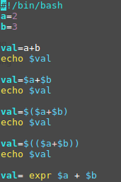
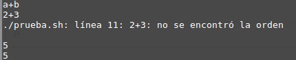
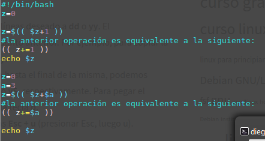
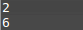

La realización de operaciones aritméticas se hace por medio de los siguientes simbolos:
+ suma
- resta
* multiplicación
/ división
La evaluación de operaciones aritméticas no es tan simple como parece, pues le debemos indicar al interprete que debe tomar lo que estamos escribiendo como una operación aritmética. En el siguiente ejemplo podemos ver un script con varias sintaxis erróneas y dos buenas.

El anterior script da como resultado:

Todas las operaciones se pueden componer con la asignación para sintetizar operaciones, como por ejemplo:

Que da como resultado el siguiente:
